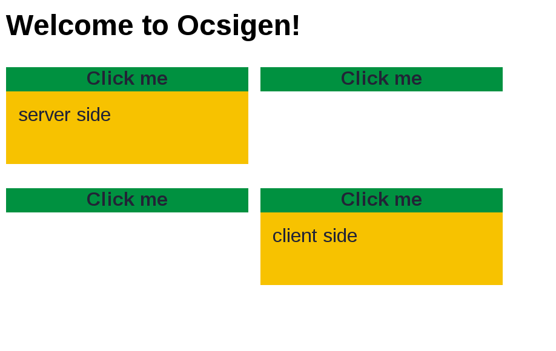
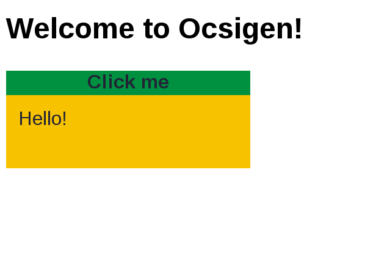
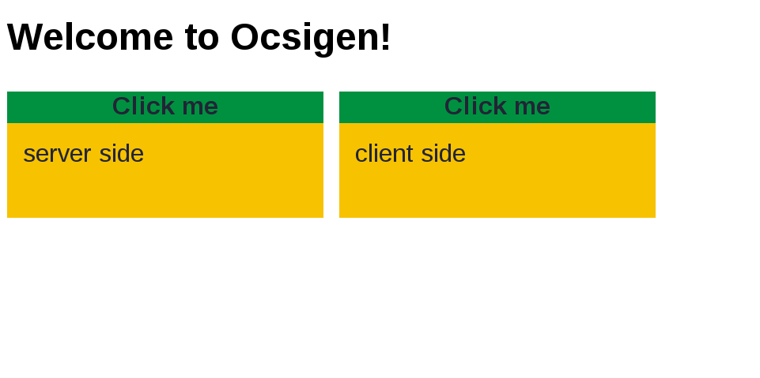

Mini-tutorial: client-server widgets
This short tutorial is an example of client-server Eliom application. It gives an example of client-server widgets.
It is probably a good starting point if you know OCaml well, and want to quickly learn how to write a client-server Eliom application with a short example and concise explanations. For more detailed explanations, see the "graffiti" tutorial, or read the manuals.
The goal is to show that, unlike many JavaScript libraries that build their widgets programmatically (by instantiating classes or calling functions), Eliom enables server-side widget generation, before sending them to the client. Pages can thus be indexed by search engines.
This tutorial also shows that it is possible to use the same code to build the widget either on client or server side.
We choose a very simple widget, that could be the base for example for implementing a drop-down menu. It consists of several boxes with a title and a content. Clicking on the title opens or closes the content. Furthermore, it is possible to group some of the boxes together to make them behave like radio buttons: when you open one of them, the previously opened one is closed.

First step: define an application with a basic service
The following code defines a client-server Web application with only one service, registered at URL / (the root of the website).
The code also defines a client-side application (let%client or section [%%client ... ]) that appends a client-side generated widget to the page. Section [%%shared ... ] is compiled on both the server and the client-side programs. Inside such a section, you can write let%server or let%client to override [%%shared ... ] and define a server-only or client-only value (similarly for [%%server ... ] and [%%client ... ]).
module%server Ex_app =
Eliom_registration.App (struct
let application_name = "ex"
let global_data_path = None
end)
let%server _ = Eliom_content.Html.D.(
Ex_app.create
~path:(Eliom_service.Path [""])
~meth:(Eliom_service.Get Eliom_parameter.unit)
(fun () () ->
Lwt.return
(Eliom_tools.D.html ~title:"tutowidgets" ~css:[["css"; "ex.css"]]
(body [h2 [txt "Welcome to Ocsigen!"]])))
)
let%client mywidget s1 s2 = Eliom_content.Html.D.(
let button = div ~a:[a_class ["button"]] [txt s1] in
let content = div ~a:[a_class ["content"]] [txt s2] in
div ~a:[a_class ["mywidget"]] [button; content]
)
let%client _ =
let%lwt _ = Js_of_ocaml_lwt.Lwt_js_events.onload () in
Js_of_ocaml.Dom.appendChild
(Js_of_ocaml.Dom_html.document##.body)
(Eliom_content.Html.To_dom.of_element (mywidget "Click me" "Hello!"));
Lwt.return ()To compile it, first create a project by calling
eliom-distillery -name ex -template client-server.basic
The name of the project must match the name given to the functor Eliom_registration.App.
After you adapt the file ex.eliom, you can compile by calling make, and run the server by calling make test.byte. Download the CSS file and place it in directory static/css. Then open a browser window and go to URL http://localhost:8080.

More explanations
This section gives very quick explanations on the rest of the program. For more detailed explanations, see the tutorial for the graffiti app or the manual of each of the projects.
- The client side program is sent with the first page belonging to the application (registered through module
Ex_app). - The
##is used to call a JS method from OCaml and##.to access a JS object field (See Js_of_ocaml's documentation:Ppx_js). - If there are several services in your application, the client-side program will be sent only with the first page, and will not stop if you go to another page of the application.
Lwtis the concurrent library used to program threads on both client and server sides. The syntaxlet%lwt a = e1 in e2allows waiting (without blocking the rest of the program) for an Lwt thread to terminate before continuing.e2must ben a Lwt thread itself.Lwt.returnenables creating an already-terminated Lwt thread.Js_of_ocaml_lwt.Lwt_js_eventsdefines a convenient way to program interface events (mouse, keyboard, ...).
Js_of_ocaml_lwt.Lwt_js_events.onload is a Lwt thread that waits until the page is loaded. There are similar functions to wait for other events, e.g., for a click on an element of the page, or for a key press.
Second step: bind the button
To make the widget work, we must bind the click event. Replace function mywidget by the following lines:
let%client switch_visibility elt =
let elt = Eliom_content.Html.To_dom.of_element elt in
if Js_of_ocaml.Js.to_bool (elt##.classList##contains (Js_of_ocaml.Js.string "hidden")) then
elt##.classList##remove (Js_of_ocaml.Js.string "hidden")
else
elt##.classList##add (Js_of_ocaml.Js.string "hidden")
let%client mywidget s1 s2 = Eliom_content.Html.D.(
let button = div ~a:[a_class ["button"]] [txt s1] in
let content = div ~a:[a_class ["content"]] [txt s2] in
Lwt.async (fun () ->
Js_of_ocaml_lwt.Lwt_js_events.clicks (Eliom_content.Html.To_dom.of_element button)
(fun _ _ -> switch_visibility content; Lwt.return ()));
div ~a:[a_class ["mywidget"]] [button; content]
)- Once again, we use
Js_of_ocaml_lwt.Lwt_js_events. Functionclicksis used to bind a handler to clicks on a specific element. - Function
asyncruns anLwtthread asynchronously (without waiting for its result). Js_of_ocaml_lwt.Lwt_js_events.clicks elt fcalls functionffor each mouseclick on elementelt.Eliom_content.Html.To_dom.of_element,Js_of_ocaml.Js.stringandJs_of_ocaml.Js.to_boolare conversion functions between OCaml values and JS values.
Third step: Generating the widget on server side
The following version of the program shows how to generate the widget on server side, before sending it to the client.
The code is exactly the same, with the following modifications:
- We place function
mywidgetin server section. - The portion of code that must be run on client side (binding the click event) is written as a client value, inside
[%client (... : unit) ]. This code will be executed by the client-side program when it receives the page. Note that you must give the type (hereunit), as the type inference for client values is currently very limited. The client section may refer to server side values, using the~%xsyntax. These values will be serialized and sent to the client automatically with the page. - We include the widget on the server side generated page instead of adding it to the page from client side.
module%server Ex_app =
Eliom_registration.App (struct
let application_name = "ex"
let global_data_path = None
end)
let%client switch_visibility elt =
let elt = Eliom_content.Html.To_dom.of_element elt in
if Js_of_ocaml.Js.to_bool (elt##.classList##(contains (Js_of_ocaml.Js.string "hidden"))) then
elt##.classList##remove (Js_of_ocaml.Js.string "hidden")
else
elt##.classList##add (Js_of_ocaml.Js.string "hidden")
let%server mywidget s1 s2 = Eliom_content.Html.D.(
let button = div ~a:[a_class ["button"]] [txt s1] in
let content = div ~a:[a_class ["content"]] [txt s2] in
let _ = [%client
(Lwt.async (fun () ->
Js_of_ocaml_lwt.Lwt_js_events.clicks (Eliom_content.Html.To_dom.of_element ~%button)
(fun _ _ -> switch_visibility ~%content; Lwt.return ()))
: unit)
] in
div ~a:[a_class ["mywidget"]] [button; content]
)
let%server _ = Eliom_content.Html.D.(
Ex_app.create
~path:(Eliom_service.Path [""])
~meth:(Eliom_service.Get Eliom_parameter.unit)
(fun () () ->
Lwt.return
(Eliom_tools.D.html ~title:"ex" ~css:[["css"; "ex.css"]]
(body [h2 [txt "Welcome to Ocsigen!"];
mywidget "Click me" "Hello!"])))
)Fourth step: widget usable either on client or server sides
If you make function mywidget shared, it will be available both on server and client sides:
let%shared mywidget s1 s2 =
...
Fifth step: close last window when opening a new one
To implement this, we record a client-side reference to a function for closing the currently opened window.
module%server Ex_app =
Eliom_registration.App (struct
let application_name = "ex"
let global_data_path = None
end)
let%client close_last = ref (fun () -> ())
let%client switch_visibility elt =
let elt = Eliom_content.Html.To_dom.of_element elt in
if Js_of_ocaml.Js.to_bool (elt##.classList##(contains (Js_of_ocaml.Js.string "hidden"))) then
elt##.classList##remove (Js_of_ocaml.Js.string "hidden")
else
elt##.classList##add (Js_of_ocaml.Js.string "hidden")
let%shared mywidget s1 s2 = Eliom_content.Html.D.(
let button = div ~a:[a_class ["button"]] [txt s1] in
let content = div ~a:[a_class ["content"]] [txt s2] in
let _ = [%client
(Lwt.async (fun () ->
Js_of_ocaml_lwt.Lwt_js_events.clicks (Eliom_content.Html.To_dom.of_element ~%button) (fun _ _ ->
!close_last ();
close_last := (fun () -> switch_visibility ~%content);
switch_visibility ~%content;
Lwt.return ()
))
: unit)
] in
div ~a:[a_class ["mywidget"]] [button; content]
)let%server _ = Eliom_content.Html.D.(
Ex_app.create
~path:(Eliom_service.Path [""])
~meth:(Eliom_service.Get Eliom_parameter.unit)
(fun () () ->
let _ =
[%client
(Js_of_ocaml.Dom.appendChild
(Js_of_ocaml.Dom_html.document##.body)
(Eliom_content.Html.To_dom.of_element (mywidget "Click me" "client side"))
: unit)
] in
Lwt.return
(Eliom_tools.D.html ~title:"ex" ~css:[["css"; "ex.css"]]
(body [
h2 [txt "Welcome to Ocsigen!"];
mywidget "Click me" "server side";
mywidget "Click me" "server side";
mywidget "Click me" "server side"
])))
)Last step: several sets of widgets
Now we want to enable several sets of widgets in the same page. A single reference no longer suffices. In the following version, the server-side program asks the client-side program to generate two different references, by calling function new_set. This function returns what we call a client value. On server side, it is not evaluated, and it has an abstract type.
module%server Ex_app =
Eliom_registration.App (struct
let application_name = "ex"
let global_data_path = None
end)
let%server new_set () = [%client ( ref (fun () -> ()) : (unit -> unit) ref)]
let%client switch_visibility elt =
let elt = Eliom_content.Html.To_dom.of_element elt in
if Js_of_ocaml.Js.to_bool (elt##.classList##(contains (Js_of_ocaml.Js.string "hidden"))) then
elt##.classList##remove (Js_of_ocaml.Js.string "hidden")
else
elt##.classList##add (Js_of_ocaml.Js.string "hidden")
let%shared mywidget set s1 s2 = Eliom_content.Html.D.(
let button = div ~a:[a_class ["button"]] [txt s1] in
let content = div ~a:[a_class ["content"; "hidden"]] [txt s2] in
let _ = [%client
(Lwt.async (fun () ->
Js_of_ocaml_lwt.Lwt_js_events.clicks (Eliom_content.Html.To_dom.of_element ~%button) (fun _ _ ->
! ~%set ();
~%set := (fun () -> switch_visibility ~%content);
switch_visibility ~%content;
Lwt.return ()))
: unit)]
in
div ~a:[a_class ["mywidget"]] [button; content]
)
let%server _ = Eliom_content.Html.D.(
Ex_app.create
~path:(Eliom_service.Path [""])
~meth:(Eliom_service.Get Eliom_parameter.unit)
(fun () () ->
let set1 = new_set () in
let set2 = new_set () in
let _ = [%client (
Js_of_ocaml.Dom.appendChild
(Js_of_ocaml.Dom_html.document##.body)
(Eliom_content.Html.To_dom.of_element (mywidget ~%set2 "Click me" "client side"))
: unit)
] in
Lwt.return
(Eliom_tools.D.html ~title:"ex" ~css:[["css"; "ex.css"]]
(body [
h2 [txt "Welcome to Ocsigen!"];
mywidget set1 "Click me" "server side";
mywidget set1 "Click me" "server side";
mywidget set2 "Click me" "server side"
])))
)And now?
Calling server functions
An important feature missing from this tutorial is the ability to call server functions from the client-side program ("server functions"). You can find a quick description of this in this mini HOWTO or in Eliom's manual.
Services
For many applications, you will need several services. By default, client-side Eliom programs do not stop when you follow a link or send a form. This enables combining rich client side features (playing music, animations, stateful applications~ ...) with traditional Web interaction (links, forms, bookmarks, back button~ ...). Eliom proposes several ways to identify services, either by the URL (and parameters), or by a session identifier (we call this kind of service a coservice). Eliom also allows creating new (co-)services dynamically, for example coservices depending on previous interaction with a user. More information on the service identification mechanism in Eliom's manual.
Sessions
Eliom also offers a rich session mechanism, with scopes (see Eliom's manual).